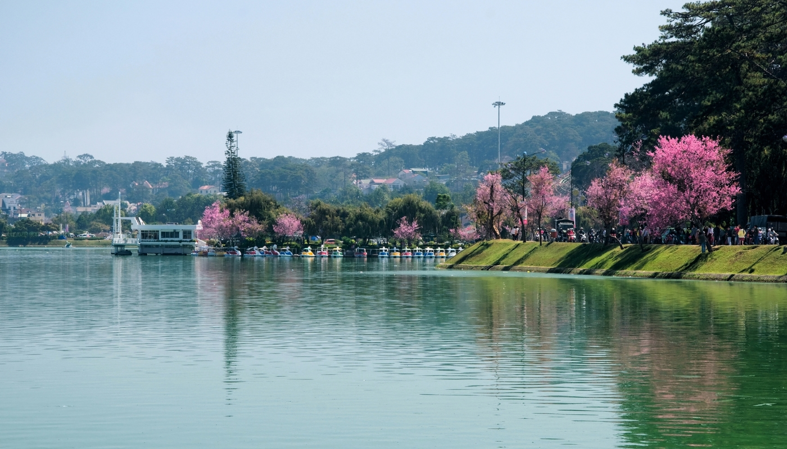
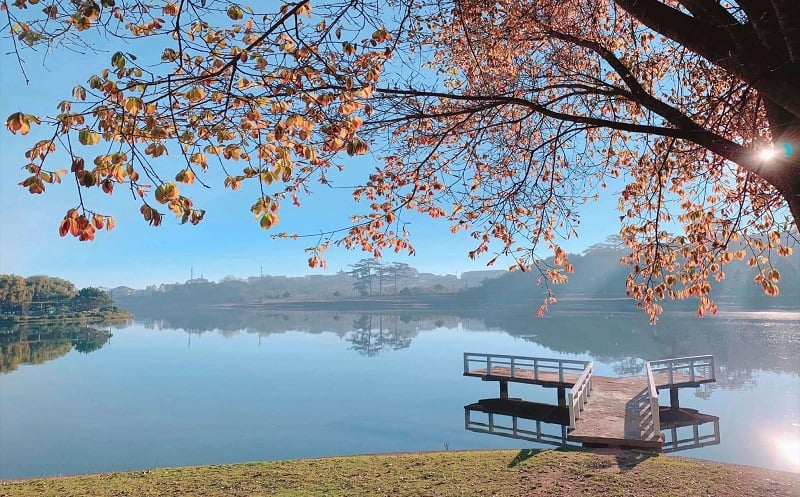
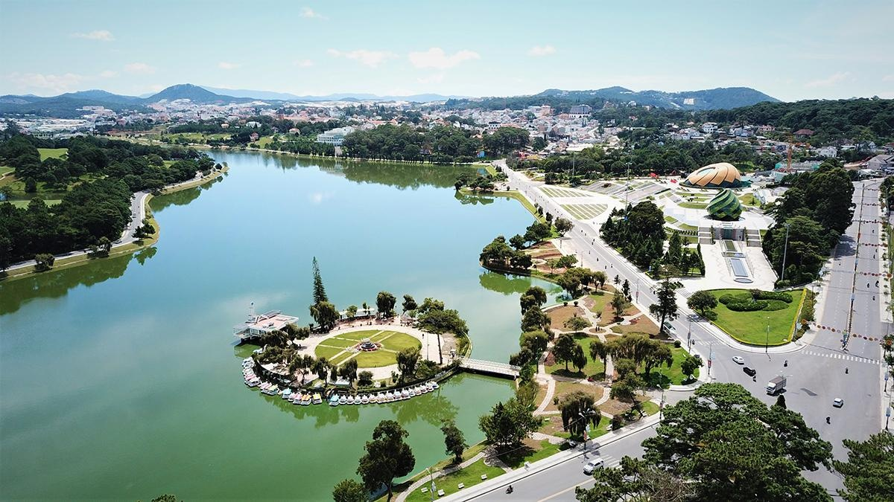
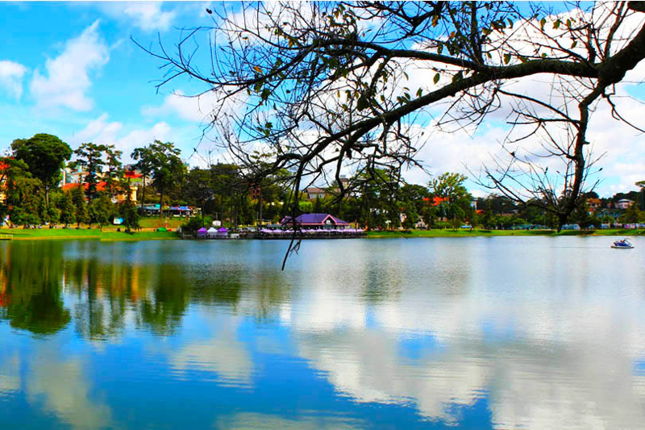

Hồ Xuân Hương là một trong những địa danh biểu tượng của thành phố Đà Lạt, nổi tiếng với vẻ đẹp thơ mộng và trữ tình. Được ví như "trái tim của Đà Lạt", hồ không chỉ là điểm nhấn trong bức tranh thiên nhiên tuyệt mỹ của phố núi mà còn gắn bó mật thiết với lịch sử, văn hóa và đời sống của người dân nơi đây.

Hồ Xuân Hương nằm ngay trung tâm thành phố Đà Lạt, thuộc tỉnh Lâm Đồng, trải dài khoảng 5 km và bao quanh bởi những con đường lớn như Trần Quốc Toản, Bà Huyện Thanh Quan và Lê Đại Hành. Hồ có hình dáng tựa như vầng trăng khuyết, diện tích khoảng 32 ha, được bao bọc bởi những rặng thông xanh mướt và các thảm cỏ mềm mại.

Tên gọi "Hồ Xuân Hương" được đặt để vinh danh nữ thi sĩ tài hoa Xuân Hương – người được biết đến với những áng thơ nổi tiếng mang đậm phong cách trào phúng và trữ tình. Cái tên này càng làm tăng thêm vẻ thơ mộng và ý nghĩa lãng mạn cho hồ.
Hồ Xuân Hương nổi tiếng với vẻ đẹp trữ tình và yên bình, là nơi giao thoa giữa thiên nhiên và con người. Bao quanh hồ là những rặng thông xanh ngút ngàn, những bãi cỏ rộng lớn, và những vườn hoa rực rỡ sắc màu. Vào buổi sáng, mặt hồ thường được phủ một lớp sương mờ ảo, tạo nên khung cảnh như trong tranh. Khi hoàng hôn buông xuống, ánh nắng chiều lấp lánh trên mặt nước, phản chiếu bóng thông và những công trình kiến trúc cổ kính ven hồ.

Dọc theo hồ, các cây cầu nhỏ xinh bắc qua, những ghế đá được đặt dưới tán cây, tạo nên không gian lý tưởng cho những đôi tình nhân hay những ai muốn tìm một góc nhỏ yên tĩnh để thư giãn, ngắm cảnh.